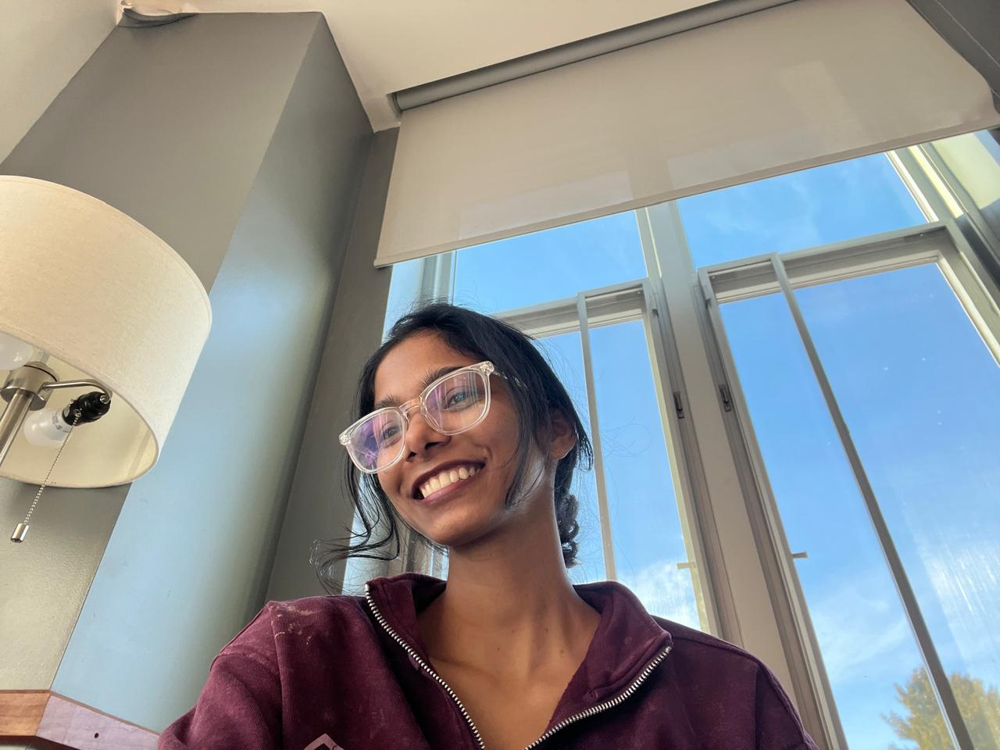

Turning complex data into clean models, smart insights, and things that actually work.!
Click any folder below to isolate that specific section, or scroll down to explore everything!
Hi, I’m Bhavana
I’m a Computer Science graduate with a Master’s in Applied Data Science, with a strong interest in transforming ideas, data, and technology into meaningful and practical solutions.
My work spans data, AI, software, visualization, and creative technology. I enjoy understanding complex problems, exploring new ideas, and developing solutions that go beyond functionality solutions that are intuitive, engaging, and purposeful.
From interactive dashboards and data-driven applications to machine learning projects and AI-powered experiences, I enjoy working across different areas of technology and continuously expanding my skills through hands-on projects.
Continuously exploring new technologies, ideas, and approaches to solving problems.
I learn best by creating. I enjoy taking an idea from concept to a tangible, working solution.
Breaking down complex challenges, identifying patterns, and finding practical ways to use technology to create better solutions.
Bringing thoughtful design, interaction, and creativity into technical work to make solutions more engaging and effective.
I believe technology is constantly evolving, and that creates endless opportunities to learn, experiment, and grow. Rather than limiting myself to one area, I enjoy exploring different disciplines and discovering where technology, creativity, and problem-solving intersect.
I’m always open to learning, collaborating, exploring new challenges, and building meaningful things.
This portfolio is a reflection of what I’ve been learning, creating, and exploring.
An interactive R Shiny dashboard for analyzing university sustainability metrics, including energy consumption, water usage, and carbon emissions, with KPI tracking and time-based visualizations.
An interactive R Shiny dashboard for exploring Clarkson University student and faculty data, featuring searchable records, geographic visualization, and interactive world maps to analyze the global distribution of the university community.
An computer vision application built to classify the severity stages of knee osteoarthritis from medical X-ray imaging using a deep learning workflow deployed via Streamlit.
Benchmarked four neural machine translation models using back-translation. Evaluated semantic preservation with cosine similarity, accuracy thresholds, and runtime analysis to compare translation quality and efficiency.
An analytical forecasting pipeline focused on extracting market signals, recognizing cyclical patterns, and generating short-term forecasts from historical financial logs using ARIMA models.
Developed a FastAPI-based REST API backed by MySQL for querying a 400K+ row IMDb movie dataset, implementing API-key authentication, SHA-256 token hashing, rate limiting, and indexed SQL queries for efficient movie search and filtering.
Data Analyst Trainee — Developer Web
Jul 2023 – Jun 2024
Extracted, transformed, and reconciled complex datasets across multiple relational database sources using advanced SQL querying and Python scripts, safeguarding data integrity for downstream analytics.
Designed and deployed automated recurring reports and operational dashboards that consolidated disparate data inputs into clear KPIs, drastically reducing manual processing overhead for stakeholders.
Investigated anomalous data points and source-level discrepancies, systematically tracing root causes and engineering validation checks to prevent recurring data pipeline failures.
Partnered closely with technical and business teams to translate open-ended operational questions into well-structured, data-driven analytical summaries.
Web Development Intern — Raise Digital
Jun 2022 – Jul 2022
Built, tested, and validated data-driven features and outputs for a single-page e-commerce application to ensure strict adherence to functional requirements prior to production release.
Authored comprehensive functional specifications and structured test cases, helping streamline coordination across teams and ensure on-time project delivery.
Clarkson University
Focused on advanced machine learning, predictive modeling, data engineering, statistical analysis, and interactive dashboard systems.
Aug 2024 – May 2026
matrusri engineering college
Built a strong foundational core in software engineering, database management, structured programming languages, and system architecture.
Jul 2019 – Jun 2023